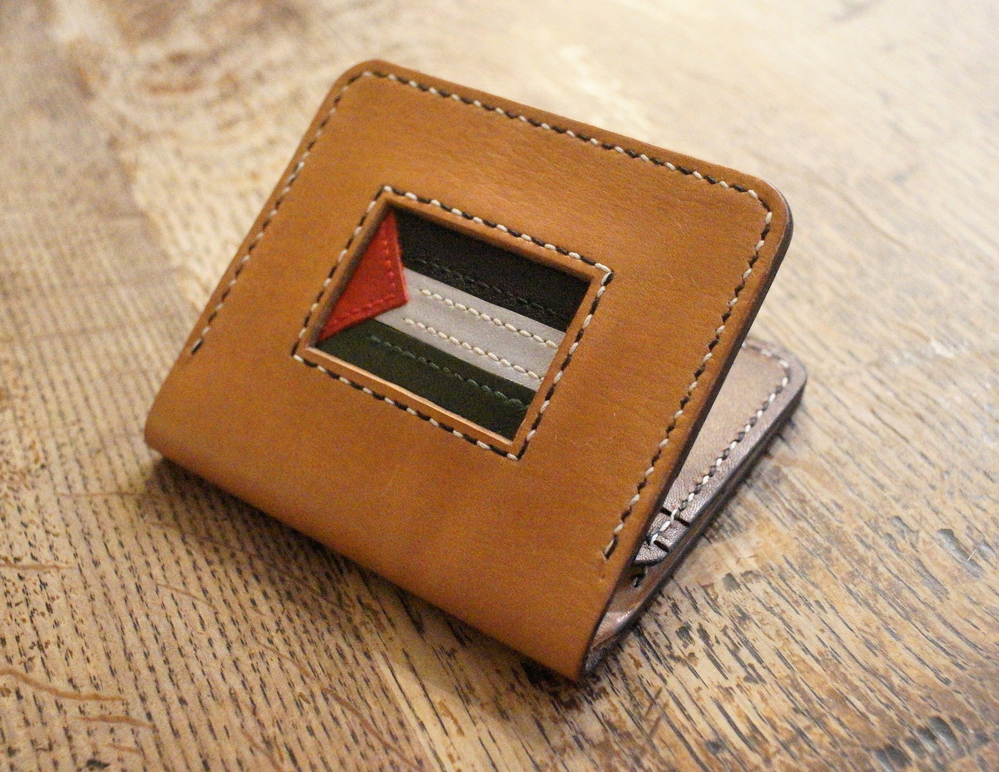
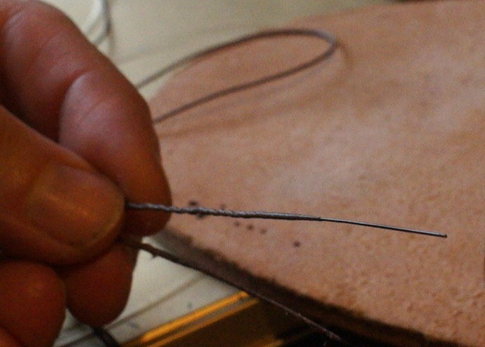
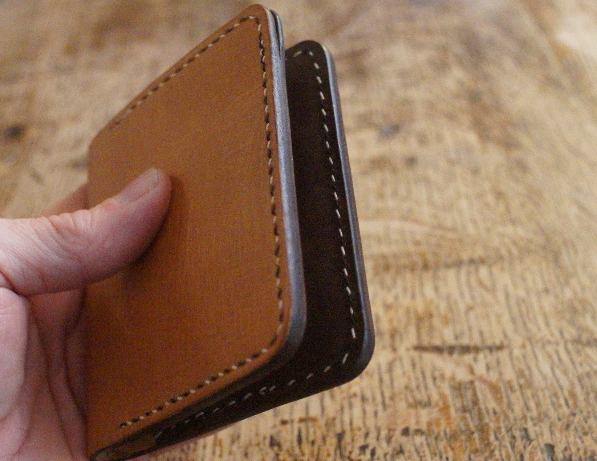
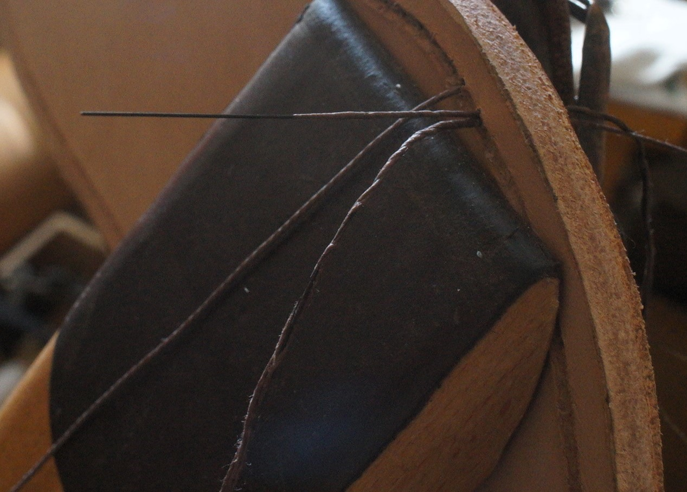
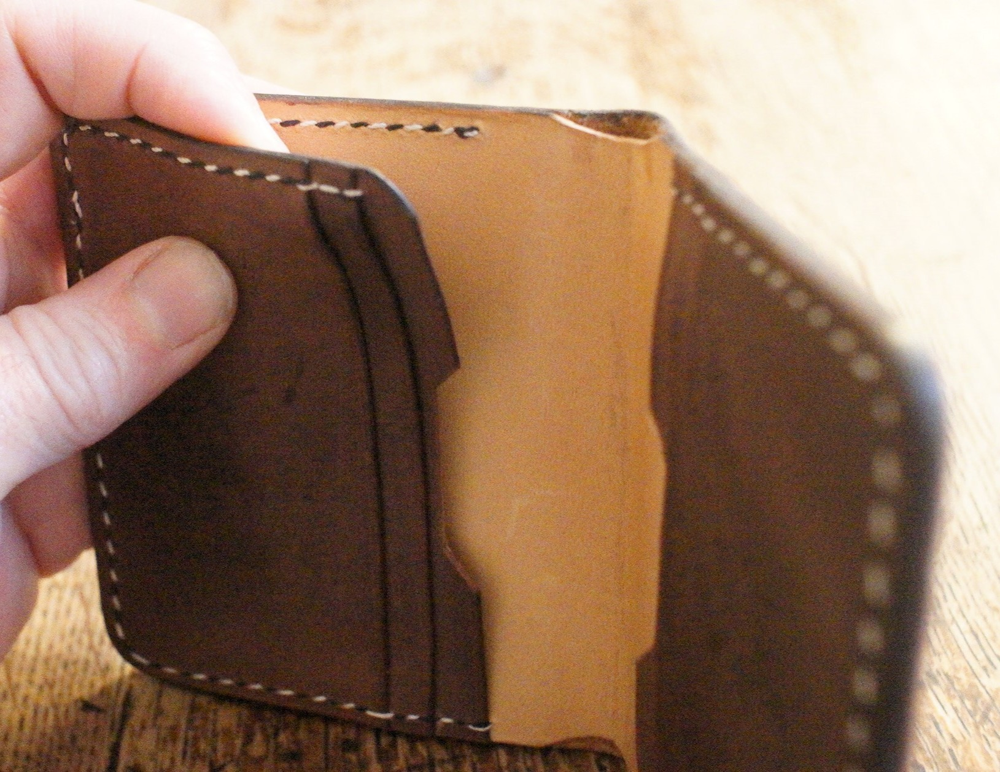
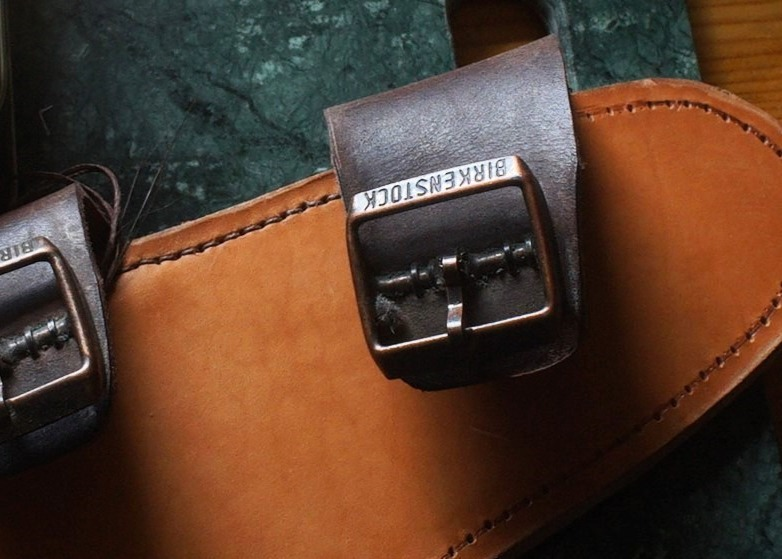
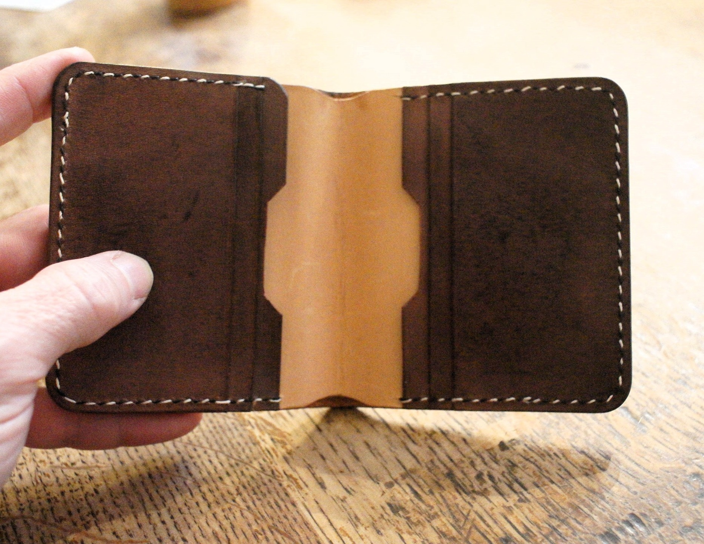
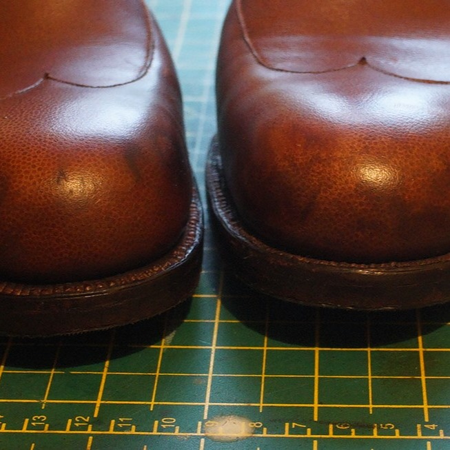

Slow stitched, by hand.
A small atelier for traditional leatherwork — wallets, shoes and harness goods made with waxed linen, boar bristle and a scholar's patience.
by hand
in Reading







The Reading Billfold
Six card slots, a full-height note pocket, and a single-piece inner lining — stitched with hand-waxed linen thread at eight stitches per inch. Intended to go soft in the hand without ever losing its shape.

The Berkshire Bifold
Six card slots, lined interior, dovetailed seams.

Welted oxfords, saved
Welt thread replaced, old sole reused, finish rebuilt by hand.
Sewing with boar bristles
Why split-bristle sewing still produces the finest hand-stitched seam.
Every item made here is designed to outlive its first owner. Nothing is glued that could be stitched, nothing is stitched that could not one day be repaired. The materials are traceable — vegetable-tanned hides from European tanneries that still use oak bark, linen thread waxed by hand with pine tar and tallow.
The same principles that guide the academic study of sustainable agriculture guide the workbench: slow inputs, closed loops, and a respect for the long arc of things.
A scholar's bench.
Between lectures on the economics of climate change, I sit at a stitching pony in a small workshop in Reading and make things the old way. The two pursuits are closer than they look.
The bench is set up in the corner of a study otherwise occupied by papers on agricultural policy and climate finance. It holds a French stitching clam, a half-round knife, three awls of decreasing diameter, and a pot of hand-made pine tar wax. The tools are not accidental: each one was made for a purpose and has remained useful, unchanged, for several centuries.
Leatherwork came into the study quietly. An old pair of welted shoes needed resoling and no one nearby would do it without gluing the sole on. The only way to have them repaired properly, it turned out, was to learn how. One repair led to another, and in time the benches for research and for craft became the same bench.
What began as a practical exercise has become something closer to a long-running argument — with the disposable, with the glued, with the opaque supply chain. The academic literature on durability, repair culture and the true cost of fast goods turns out to map almost exactly onto a workbench: a saddle-stitched seam will not come undone when one thread breaks; a pegged heel can be rebuilt without destroying the upper.
Every piece that leaves the workshop is made on the assumption that it will be repaired, perhaps more than once, and that the person who makes the next repair may not be me. Everything is designed to be taken apart.
"Once you have the bristles right, it's a doddle."
By day · University of Reading
Research and teaching across climate science, agricultural policy and the economics of climate change. The work asks how incentives, rules and land-use decisions interact with the living systems beneath them.
- Climate economics—
- Sustainable agriculture—
- Land-use & policy—
By evening · Welt & Bristle
A private workshop making saddle-stitched leather goods and repairing welted footwear in the traditional manner. No machine stitching, no synthetic threads, no glue where a stitch will do.
- Saddle stitch8 spi
- Hand-waxed linenpine tar + tallow
- Welted repairreuse where possible
Pieces from the bench.
A small rotating catalogue of finished work. Each piece is one-of-a-kind; many can be commissioned again in a variant of your choosing.
Field notes.
Occasional writing on technique, repair and the slow economics of making things that last. Search the archive above.
Commissions & repair.
A short list of services, each accepted in small batches. Most commissions take four to eight weeks from first conversation to despatch.
Welted footwear repair
Resoling, heel rebuilds and welt-thread replacement for Goodyear- and hand-welted shoes. Old welts are reused where sound. Finishing is done the long way with dye, wax and polish.
Bespoke small goods
Bifolds, card wallets, belts and simple bags. Saddle-stitched in oak-tanned leather of your choice, lined or unlined, with small personal details — monograms, inlays, a nation's colours.
Harness & straps
Watch straps, camera straps, dog leads, guitar straps. Bridle leather, brass hardware, and where you ask for it, traditional hand-sewn boar-bristle finishes at the loop ends.
Every piece follows the same four slow steps.
Conversation
A short exchange about the purpose, the hand that will carry it, and any constraints of material or colour.
Drafting
A paper pattern is made and corrected. For footwear repair, the existing welt is examined and photographed.
Bench work
Cutting, skiving, edge finishing, stitching. No power tools other than a leather skiver; everything else by hand.
Finish & send
Edges burnished, stitching waxed, the piece conditioned and wrapped in tissue with a note of how to keep it.
Write, and we'll write back.
The workshop answers letters on Thursdays. For commissions, a short description of what you'd like is usually enough to start a conversation.
- Workshop
- Reading, Berkshire
By appointment only - Correspondence
- hello@weltandbristle.co.uk
- Field notes
- The journal
- Hours at the bench
- Tuesday — Saturday
9.00 — 17.30